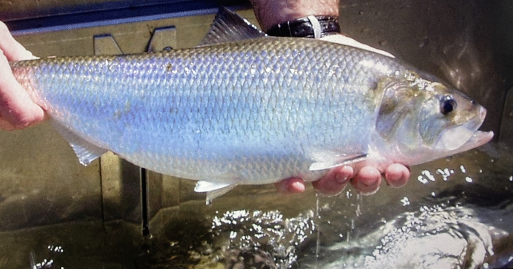

La anguila americana
SÓLO CAPTURA Y SUELTA
El sábalo americano es la especie de arenque más grande de Connecticut. Pasan la mayor parte de su vida adulta en el mar y regresan al río en el momento del desove. El sábalo americano nada más río arriba que cualquiera de los demás arenques. En el río Connecticut el sábalo ha emigrado tan al norte como Bellows Falls, en Vermont. Algunos sábalos adultos regresan al mar tras el desove, pero el estrés es grande y es frecuente ver sábalos muertos a finales de la primavera. Los sábalos jóvenes pasan el verano y el otoño en los ríos y emigran a los océanos a finales de otoño.
Cómo identificar al sábalo americano
El sábalo americano es de color gris y verde azulado en el lomo y plateado en los costados, con blanco en el vientre, tienen una mancha oscura en los hombros a veces seguida de varias otras. Su boca es más grande que la de otros arenques (¡va desde el final de la mandíbula hasta la mitad del ojo!) en comparación con los juveniles, cuyo hocico es ligeramente más puntiagudo que el de otros arenques. Miden entre 15 y 24 pulgadas. El récord del estado de Connecticut es de 25,8 pulgadas y pesa 9,3 libras. Si pesca un sábalo americano, asegúrese de liberarlo.